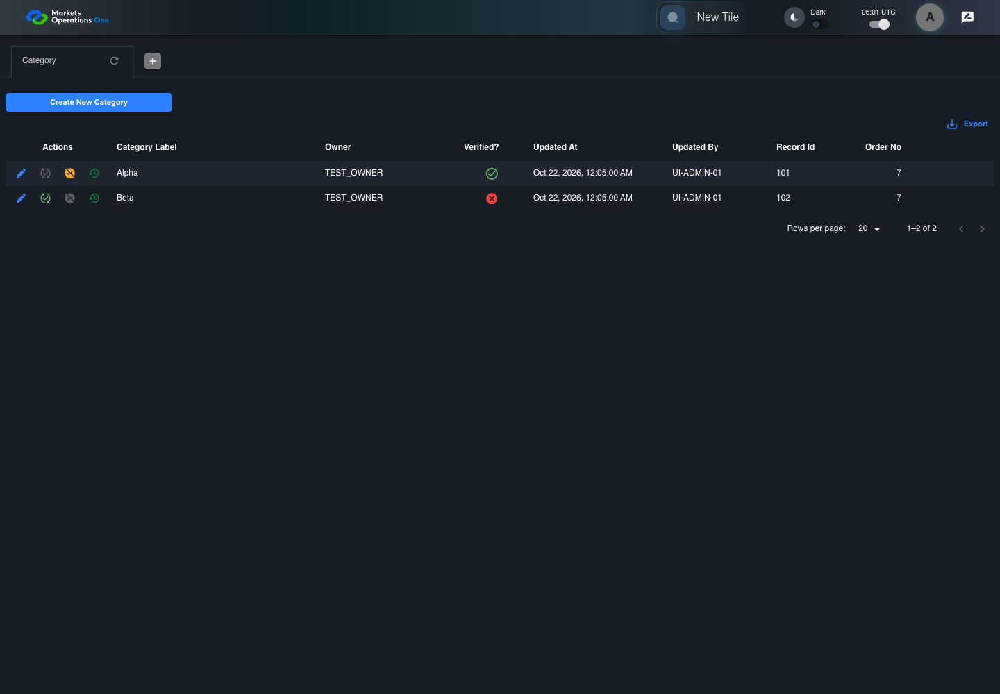

UX-021 administration boundary with step screenshots
PASS · application/run-050/ux-021-administration-boundary-with-step-screenshots-249cff05743c-attempt-1 · ACTUAL_APPLICATION_LOCAL_SERVICES
Actual React administration screens. Controlled browser credentials, role, records, and BFF responses. Save probes persist the received UI payload without replacing it with expected values. Declared clock emulation controls field timers. Proposed accessibility and source-risk expectations remain separate from business approval.
2026-10-22T06:01:42.766Z to 2026-10-22T06:01:46.126Z
Assertions and result · Artifact manifest · Exact run inputs and source hashes
Result SHA-256:a0a024bb3b908e5da481eafdb7d7c811b06e896d13570f68ddaf533a43f9c3d7Machine observations
- accessibility-snapshot.json
bd0e344821252cf34344830bf2bb71b539feb6b44f9a29146567f061ea2eb71e - status-accessibility-values.json
7eae2466fb64b02ab5a6a87190d8dc24d48a5812b14abbac03feda147c2a315a
Screenshot capture: CAPTURED. Named frames: 4.
Step screenshot bindings: COMPLETE. 3/3 canonical steps have execution screenshots.
Bindings measure structural coverage only. They do not establish screenshot content quality or relevance.
Screenshot content review: NOT_REVIEWED. Recorded context: 0/4 frames. Identical image bytes: 3 repeated frames. Recorded context does not establish human visual review.
Canonical step timeline
Given ADMIN-A has C1 verified and C2 unverified in the isolated category fixture
Execution: PASSED.
1. step-01 Visible state after step 1: Given ADMIN-A has C1 verified and C2 unverified in the isolated category fixture
2026-10-22T06:01:45.107Z · 1440×1000
Step: /Users/lushevol/code/github/ratan-release-impact/workbench/tasks/ui-test-coverage-20261022/test-cases.md:12925
SHA-256:3ff22567649b88b3b7efacb02161f55d15e196b3aa516e1e76a3c33c391ffa40When The accessibility probe captures category verification cells without color information
Execution: PASSED.
2. step-02 Visible state after step 2: When The accessibility probe captures category verification cells without color information
2026-10-22T06:01:45.193Z · 1440×1000
Step: /Users/lushevol/code/github/ratan-release-impact/workbench/tasks/ui-test-coverage-20261022/test-cases.md:12926
SHA-256:3ff22567649b88b3b7efacb02161f55d15e196b3aa516e1e76a3c33c391ffa40Image bytes match frame 1. An unchanged image can be valid for consecutive assertions. This match does not establish correct step content.
Then The cell labelled "Verified?" in the Category grid row with "Record Id" equal to "101" on the administration page exposes a text or accessible state distinct from the cell labelled "Verified?" in the Category grid row with "Record Id" equal to "102" on the administration page
Execution: PASSED.
3. step-03 Visible state after step 3: Then The cell labelled "Verified?" in the Category grid row with "Record Id" equal to "101" on the administration page exposes a text or accessible state distinct from the cell labelled "Verified?" in the Category grid row with "Record Id" equal to "102" on the administration page
2026-10-22T06:01:45.378Z · 1440×1000
Step: /Users/lushevol/code/github/ratan-release-impact/workbench/tasks/ui-test-coverage-20261022/test-cases.md:12927
SHA-256:3ff22567649b88b3b7efacb02161f55d15e196b3aa516e1e76a3c33c391ffa40Image bytes match frame 2. An unchanged image can be valid for consecutive assertions. This match does not establish correct step content.
Additional named frames

The final visible state after the named test assertions.
2026-10-22T06:01:45.509Z · 1440×1000Step: Test source: /Users/lushevol/code/github/ratan-release-impact/workbench/e2e/audit-specs/admin-ux.spec.ts:12
SHA-256:
3ff22567649b88b3b7efacb02161f55d15e196b3aa516e1e76a3c33c391ffa40Image bytes match frame 3. An unchanged image can be valid for consecutive assertions. This match does not establish correct step content.
Screenshots establish visible state only. Assertions and traces support functional claims.